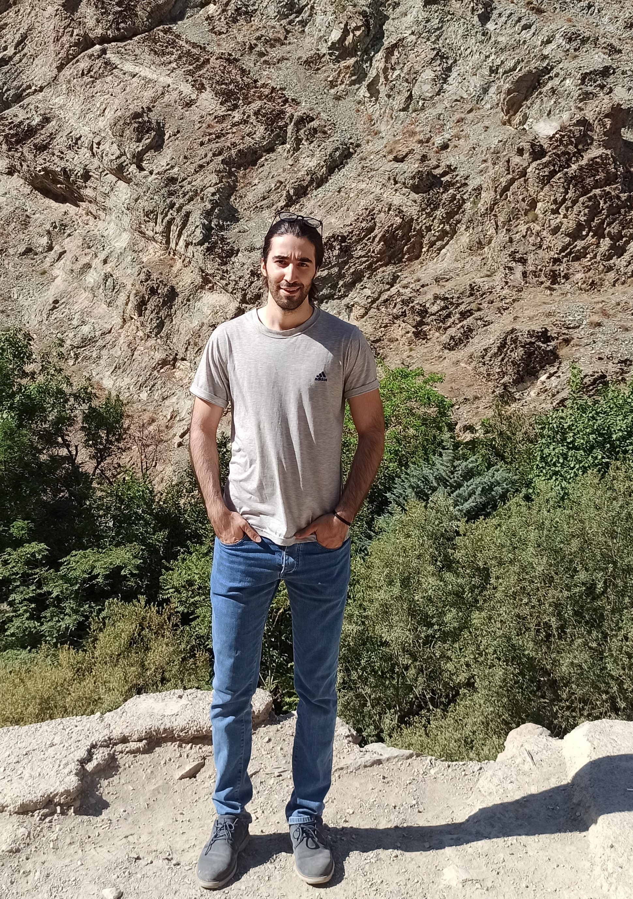
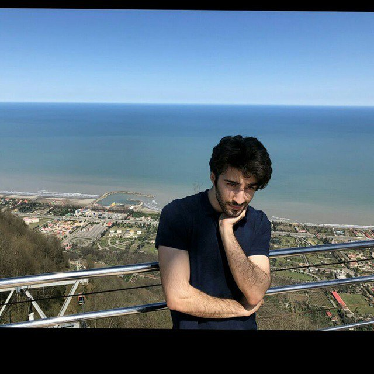
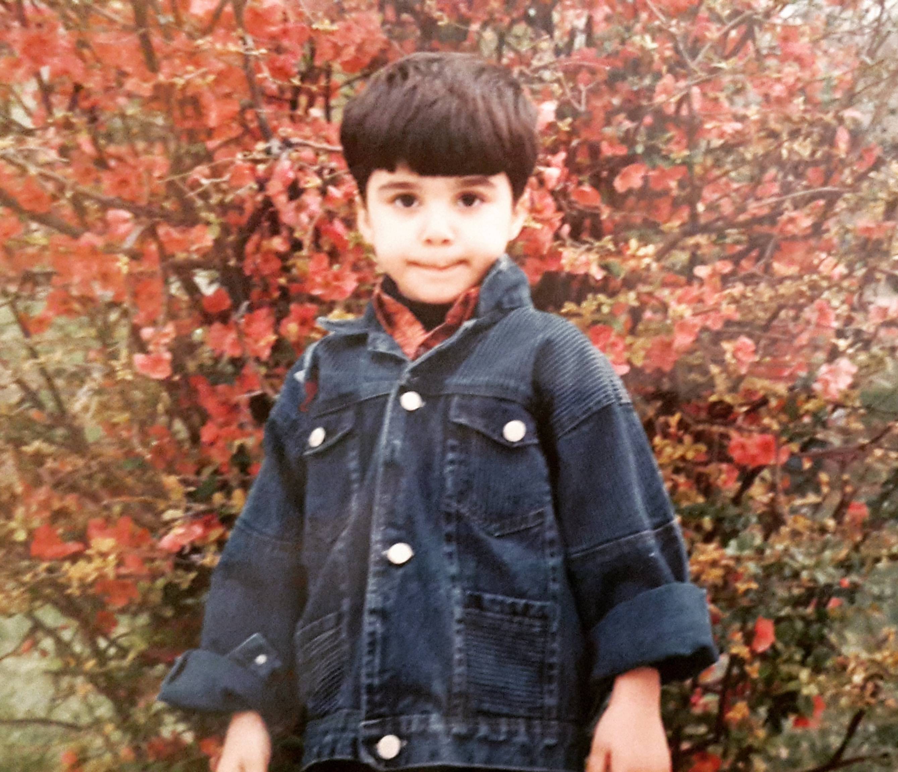

2022-Up to Now
I am currently working as a researcher at the Institute for Research in Fundamental Sciences (IPM). I am a member of the theoretical group of the School of Particles and Accelerator. My mentor is Dr.Ali Naseh. In this group, I study algebraic geometry due to quantization for a compact surface to extend one of the projects of the group associated with the partition function in 3D gravity. IPM provides a great opportunity to become familiar with another view of quantization of gravity based on rigorous mathematics and also other related topics such as topology, topological field theory, moduli spaces, first-order formalism, BTZ black holes, and the partition function of gravity. Also, this semester I take a course in the school of mathematics at IPM with the title "Topics in Hamiltonian Dynamics, Symplectic Topology, and Complex Geometry".

2020-2022
After my BSc, I found an appropriate perception to think about my academic career and I decided to enroll in MSc in theoretical physics. Because it would provide me with an opportunity to do some high-level research. During my MSc program (Kharazmi university), I passed some advanced courses such as quantum field theory, gravitation, cosmology, etc. Also, I have been tracking some online open courses and materials (The Theoretical Minimum by Lenard Susskind, String Theory and Holographic Duality at MIT by Hong Liu, etc.). My MSc thesis is entitled "study critical phenomena via holographic approach"(see my MSc thesis draft). I chose this subject for different reasons. First and foremost, to improve my background in string theory, the holographic principle, AdS/CFT correspondence, D-branes, black holes, the information paradox, and quantum gravity. Overlay, I think it would be great having a background in those topics prior to starting a Ph.D. program. In my MSc thesis, I reviewed some aspects of black holes, the Holographic principle, and finally the application of a Holographic (Karch- O'Bannon) model of the D3/D7 brane system to compute conductivity. And it is shown that in this kind of Holographic model, there exists a kind of unexpected phase transition with negative differential resistivity. As the final part of my dissertation, colleagues and I have been working on a Holographic Weyl semimetal and a Holographic Chiral Magnetic effect to show phase transition and compute critical exponent numerically. Our paper “Holographic Chiral Magnetic effect and Nonequilibrium Critical Phenomena” is almost ready and will be posted on arXiv soon and prepared for submission to JHEP.

2015-2020
When I decided to pursue physics as a future career. I was in the top 5 percent of the national university entrance examination in Iran, and I was able to choose one of the best physics departments in the country. I got admitted to Institute for Advanced Studies in Basic Sciences (IASBS), and there I passed many undergraduate and graduate courses.

Before 2015!
My journey to the center of physics started from the roof of our house with my father. When we were peering into the darkness and glowing stars, as a peculiar and curious child, I attempted to ask astonishing questions of my father about gravity, the sun, moon, etc. In middle school, I found the study of nature elegant. Also, I researched ants and their contribution to nature based on La vie des fourmis by Maurice Maeterlinck. And I was selected as a young researcher among students in the state. In high school, I got admitted to the National Organization for Development of Exceptional Talents (NODET). NODET provides a great opportunity for me to get familiar with some aspects of physics and math to understand the character of physical law. Therefore, I found physics and human beings as an integral part of my life. In other words, Carl Sagan says: "We are a way for the universe to know itself".
